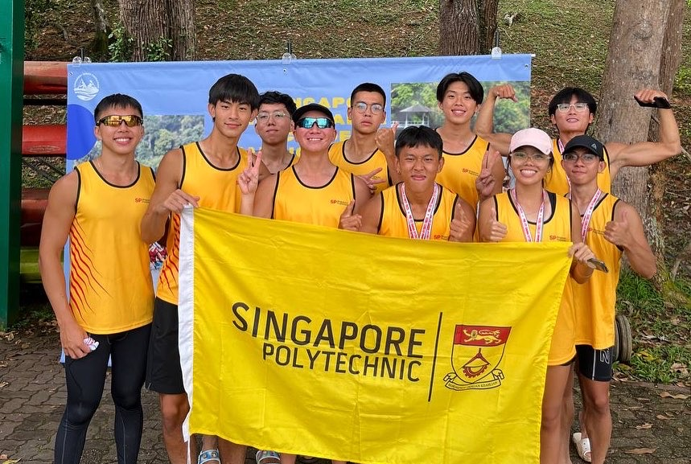
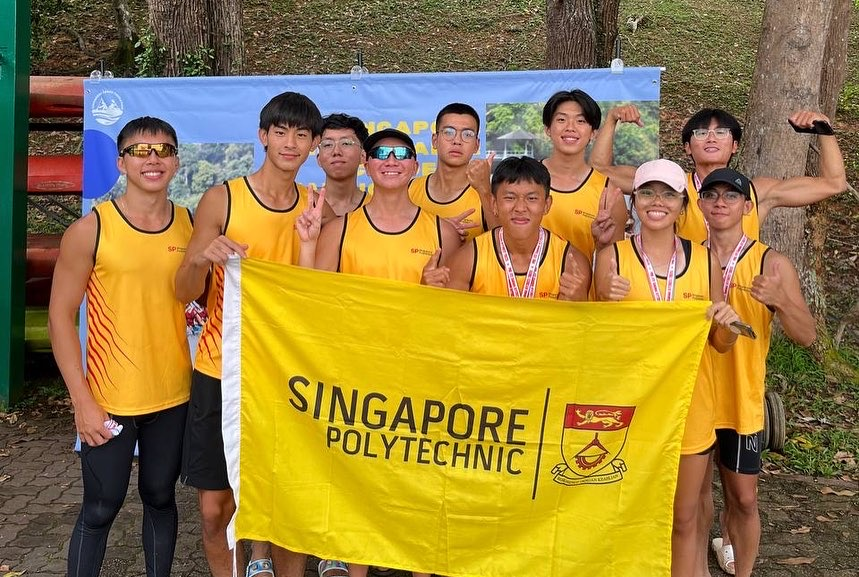

About Me
I approach projects with an emphasis on clarity, collaboration, and continuous improvement. I enjoy working in team-based environments where ideas can be challenged and refined, and I value clear communication when translating technical concepts into practical outcomes. I am comfortable taking initiative when needed and enjoy contributing both independently and as part of a team.
 
